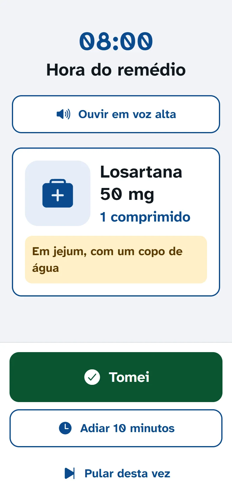
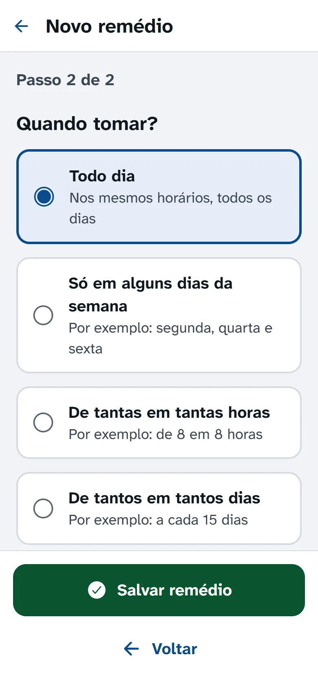
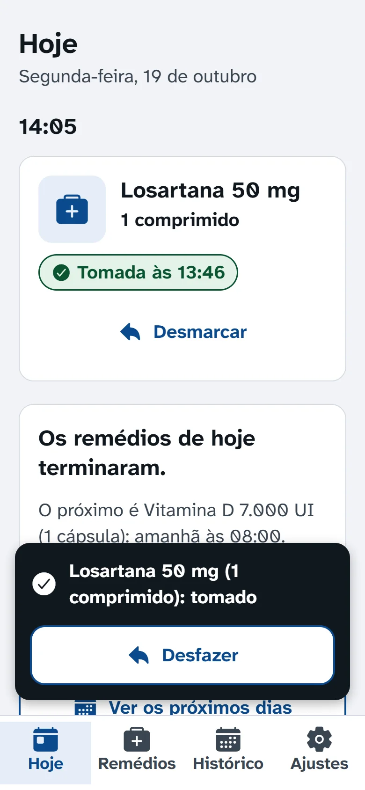
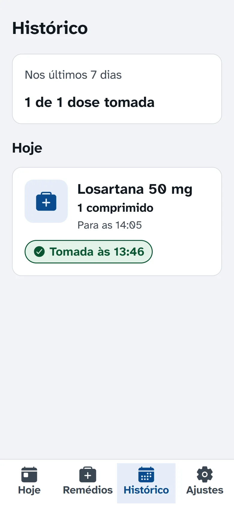
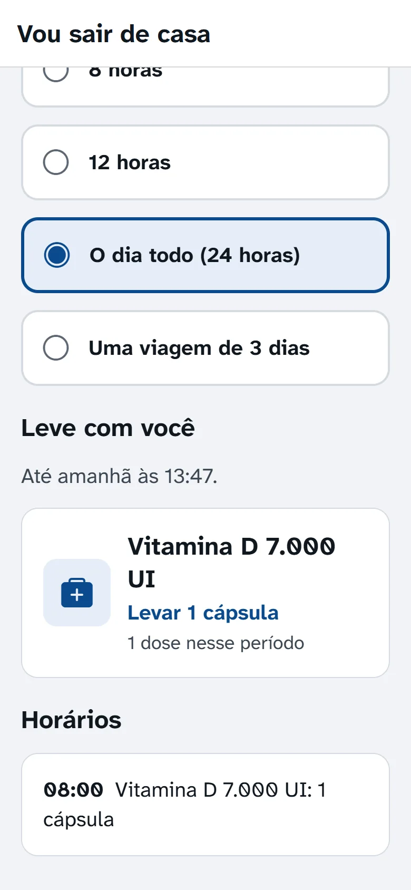
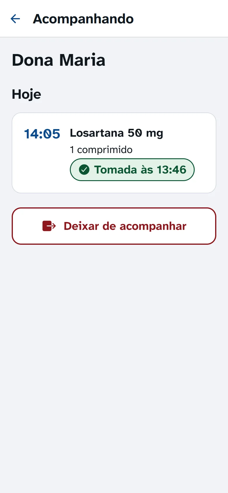
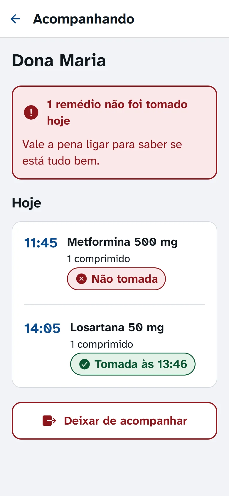

Na hora do remédio, o celular avisa.
Um alarme forte para cada remédio, com letra grande e um botão Tomei. Para quem toma vários remédios por dia e para a família que cuida.
Grátis e sem propaganda · 66 MB · Android 7 ou mais novo · Como instalar

Como funciona
Você cadastra uma vez. Depois, o app avisa na hora certa, todos os dias.
-
Cadastre o remédio
Nome, quantidade e horário, com botões grandes. Serve para comprimido, cápsula, gotas, ml, sachê, ampola, jato e outras medidas, todo dia, em alguns dias da semana, de tantas em tantas horas ou uma vez por mês.

-
Na hora, toque em Tomei
O alarme toca com som, vibração e tela cheia, mesmo com o celular bloqueado. Se ninguém responder, ele toca de novo três vezes, de 5 em 5 minutos. Tocou em Tomei sem querer? Dá para desfazer.

-
Veja o que já tomou
O histórico mostra o que foi tomado, pulado ou esquecido, dia a dia. Bom para levar à consulta.

Feito para quem enxerga pouco
Cada tela foi pensada para quem tem dificuldade com letra pequena e com celular.
Letra grandeE ela cresce junto com o tamanho de letra que você escolheu no celular.
Botões grandesFáceis de acertar, mesmo com a mão tremendo.
Contraste altoTexto escuro sobre fundo claro, sem letras apagadas.
Ouvir em voz altaNo alarme, um toque e o app lê o nome do remédio e a quantidade.
Português simplesTodo botão diz o que faz, com o nome escrito ao lado do ícone.
Cabe na rotina de verdade
- Qualquer rotina
- Todo dia, alguns dias da semana, de 8 em 8 horas, a cada 15 dias ou uma vez por mês.
- Remédios juntos
- Os remédios do mesmo horário aparecem num alarme só.
- Adiar
- Não dá para tomar agora? Toque em Adiar e o alarme volta em 10 minutos.
- Estoque
- O app desconta cada dose e avisa quando faltar remédio para 7 dias.
- Vou sair de casa
- Diga quanto tempo vai ficar fora e veja quais remédios levar.
- Próximos dias
- Os remédios dos próximos 7 dias, dia por dia, para se organizar.
- Foto do remédio
- Uma foto da caixa ajuda a não confundir na hora.
- Cópia de segurança
- Guarde um arquivo com tudo, para trocar de celular sem perder nada.

A família acompanha de longe
Um filho, uma filha ou um cuidador vê no celular se o remédio foi tomado, e recebe um aviso se algum ficar sem resposta.
- Em Ajustes, a pessoa toca em “Responsáveis por mim” e recebe um código de 6 números.
- Ela manda o código para o filho, por exemplo pelo WhatsApp.
- O filho instala o app, vai em Ajustes, toca em “Sou responsável: acompanhar alguém” e digita o código.
Sem senha e sem cadastro. Só vai para a internet o que a pessoa compartilhar, e ela pode parar quando quiser.


Como instalar no Android
Baixe o appToque em “Baixar para Android”. O arquivo tem 66 MB; se puder, use o Wi-Fi. Se o navegador perguntar se quer manter o arquivo, confirme.
Abra o arquivoQuando terminar, toque em “LembreteDeRemedios.apk” na notificação ou na pasta Downloads.
Permita a instalaçãoSe o celular perguntar, toque em “Configurações”, ligue “Permitir desta fonte”, volte e toque em “Instalar”. Os nomes mudam um pouco de um celular para outro.
Libere o alarmeAbra o app. Ele mostra 4 itens para liberar, um por um, e um botão para testar o alarme.
Perguntas frequentes
É grátis mesmo?
Sim. Não tem versão paga, não tem propaganda e não tem limite de remédios.
Precisa de internet?
Não. O alarme e tudo o que você cadastra funcionam sem internet. A internet só é usada se você convidar alguém da família para acompanhar.
Para onde vão os meus dados?
Ficam no seu celular. Se você convidar um responsável, o seu nome, o nome dos remédios, a quantidade, os horários e se você tomou vão para um servidor do Google, só para quem você convidou ver. Fotos e observações não saem do celular. Leia a política de privacidade.
E se eu não ouvir o alarme?
Ele toca de novo três vezes, de 5 em 5 minutos. Se ninguém responder, a dose fica marcada como não tomada e, se você tiver um responsável, ele recebe um aviso no celular dele.
Funciona no iPhone?
Ainda não. Por enquanto, só no Android 7 ou mais novo.
O app substitui a orientação do médico?
Não. Ele só lembra o que você cadastrou. Siga sempre a receita e, em caso de dúvida, fale com o médico ou o farmacêutico.
Comece hoje. É grátis.
Cadastre o primeiro remédio e deixe o celular lembrar por você.
Baixar para Android